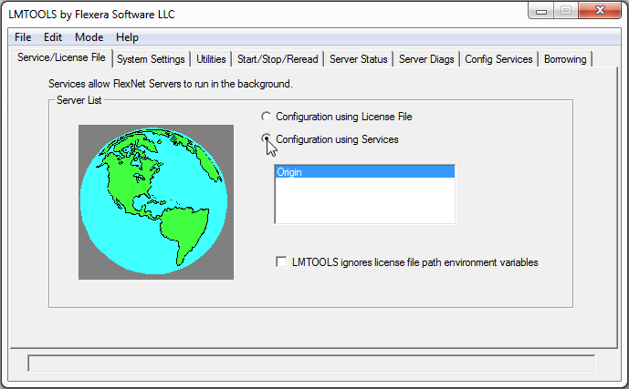
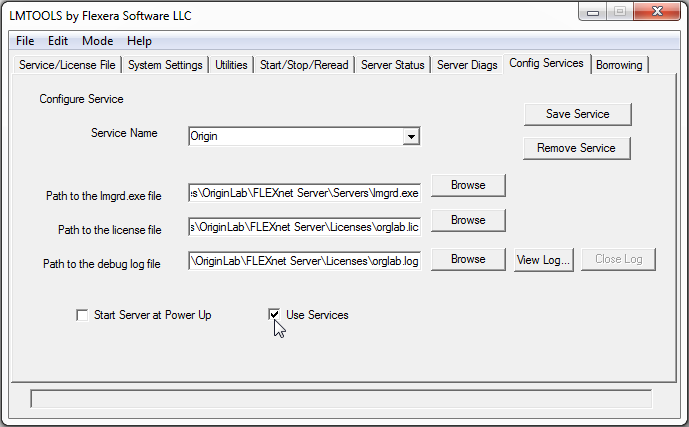
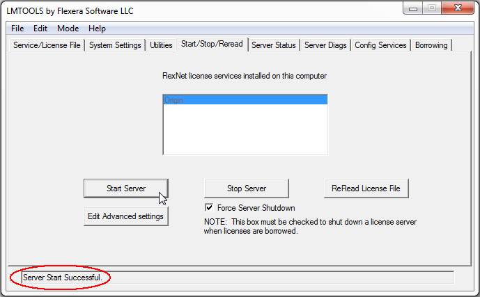
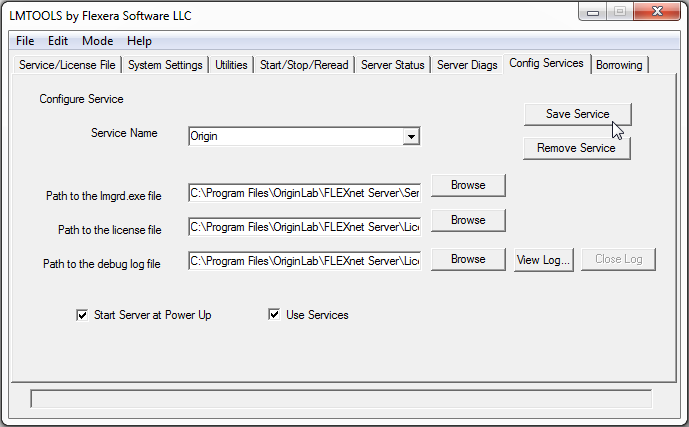

FLEXnet-Dienst einrichten und starten
Setup-n-Start_Server
- Führen Sie LMTOOLS aus dem Ordner \Tools\ des FLEXnet-Servers aus. Wenn Sie Windows Server 2012, 2008, Windows Vista, 7 oder 8 haben, klicken Sie mit der rechten Maustaste auf LMTools.exe und wählen Sie "Als Administrator ausführen" aus, um die Datei zu öffnen.
- Wählen Sie auf der Registerkarte Service/License File die Option Configuration Using Services.
 - Geben Sie auf der Registerkarte Config Services entweder OriginLab oder einen Namen Ihrer Wahl im Textfeld Service Name ein.
- Klicken Sie im Feld Path to the lmgrd.exe file auf die Schaltfläche Durchsuchen und navigieren Sie zu dem Ordner \Servers\ des FLEXnet-Servers, wählen Sie im Dialog Öffnen die Datei lmgrd.exe und klicken Sie dann auf die Schaltfläche Öffnen. (Hinweis: Wenn Sie den FLEXnet-Server im Standardpfad installiert haben, ist der Ordner: C:\Program Files\FLEXnetServer\Servers\). Wenn Sie fertig sind, sollten der vollständige Pfad und der Dateiname lmgrd.exe im Textfeld angezeigt werden.
- Befolgen Sie die gleiche Vorgehensweise für das Feld Path to the license file (Beispiel im Bild unten: C:\Program Files\FLEXnetServer\Licenses\orglab.lic).
- Die Debug-Protokolldatei existiert noch nicht - der Dienst erstellt sie basierend auf der Eingabe in dieses Textfeld. Sie können den gesamten Text aus dem Lizenztextfeld kopieren und ihn in das Textfeld Path to the debug log file einfügen. Ändern Sie dann jedoch die Dateinamenserweiterung in .log.
- Wählen Sie Use Services.
- Wenn Sie möchten, dass der Dienst automatisch gestartet wird, wenn der Server hochfährt, aktivieren Sie Start Server at Power Up.
 - Wechseln Sie zur Registerkarte Start/Stop/Reread. Wenn Sie gefragt werden, ob Sie den Dienst speichern möchten, klicken Sie auf Ja.
- Aktivieren Sie auf der Registerkarte Start/Stop/Reread das Kontrollkästchen Force Server Shutdown.
- Klicken Sie auf die Schaltfläche Start Server. Sie sollten die Meldung "Server Start Successful" in der Statusleiste LMTOOLS angezeigt bekommen.
 - Klicken Sie auf der Registerkarte Server Status auf die Schaltfläche "Perform Status Enquiry". Das Statusfenster meldet relevante Informationen zur Funktionsnutzung.

- Wenn alles OK ist, wechseln Sie zur Registerkarte Config Services und klicken Sie auf die Schaltfläche Save Service und dann auf Yes in der Aufforderung zum Speichern.
 - Überprüfen Sie jetzt, ob dieser FLEXnet-Server eine aktivierte Internet-Firewall hat. Wenn das der Fall ist, müssen Sie Ausnahmen durch die Firewall hinzufügen, um den folgenden zwei Programmen (die sich im gleichen Speicherort befinden sollten) zu erlauben, durch die Firewall zu kommunizieren:
- LMGRD.EXE - Der FLEXnet-Lizenzmanager
- ORGLAB.EXE - Der Vendor Daemon von Origin
Um Ausnahmen zu prüfen und hinzufügen, öffnen Sie im FLEXnet-Server das Control Panel|Security Center. Die Registerkarte Allgemein im Dialog der Windows Firewall sollte den Status "Ein (empfohlen)" haben und das Kontrollkästchen "Keine Ausnahmen zulassen" sollte deaktiviert sein. Verwenden Sie auf der Registerkarte Ausnahmen die Schaltfläche Programm hinzufügen, um LMGRD.EXE und ORGLAB.EXE hinzuzufügen. Sie können die Option Durchsuchen verwenden, um diese Programme im Unterordner \Servers Ihres FLEXnet-Servers zu finden. Nachdem Sie diese Programme hinzugefügt haben, sollten sie in der Liste der Ausnahmen mit aktivierten Kontrollkästchen angezeigt werden.
- Um den Zugriff des FLEXnet-Dienstes von Origin durch eine Firewall zwischen Ihrem Server und Ihren Client-Installationen zuzulassen, lesen Sie bitte die Informationen auf den folgenden Webseiten:
- Wenn Sie den Zugriff auf den FLEXnet-Dienst einschränken oder Lizenzen für bestimmte Anwender, Abteilungen etc. reservieren möchten, können Sie eine Optionsdatei erstellen. Weitere Einzelheiten finden Sie hier.
- FLEXnet-Server für Linux einrichten